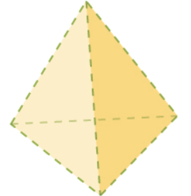

CHEMICAL BONDING : HYBRIDISATION
YOUTUBE PLAYLIST LINK
ALL TOPICS IN THE PLAYLIST :
- Intro to Chemical Bonds
- Ionic Bonds
- Lattice Energy and Born-Haber Cycle
- Fajan’s Rule
- Lewis Dot structure
- VBT
- More on VBT (Pi bonds)
- Hybridisation
- VSEPR
- MOT part I
- MOT part II
- Dipole Moment
- Bond Angle
- Drago's Rule
- Vanderwaal's Force
- Hydrogen Bonding
HYBRIDISATION
YOUTUBE LECTURE LINK
TOPICS IN THIS LECTURE :
-
Hybridisation Introduction - using example of methane (
\(\text{CH}_4\)) molecule
-
In first excited state C will form 4 sigma bonds with 4 atoms of
hydrogen:
- One : 1s - 2s
- Three : 1s - 2p
- VBT says the one s-s bond should be different from the three s-p bonds
- But VBT fails as it was observed that all the four bonds are equivalant in all respects like Bond Lenght, and Bond Energy.
- As per this new concept "hydridisation", atomic orbitals of same or nearly same energy, intermix to give new orbitals of exactly same energy.
- In case of methane, 1s and 3p combine to form 4 new \(\text{sp}^3\) orbitals.
- The new hybrid \(\text{sp}^2\) orbitals will have characteristics of both s and p (more p than s).
- These hybrid orbitals define the shape of the molecule; in case of \(\text{CH}_4\), it will be tetrahedral.
-
In first excited state C will form 4 sigma bonds with 4 atoms of
hydrogen:
-
Theory of Hybridisation
- Hybridisation is the intermixing of atomic orbitals of same or nearly same energy and same shape, to give new orbitals of exactly same energy.
-
All of following orbitals can undergo hybridisation :
- Half filled - will form a covalent bond as expected.
- fully filled - when a lone pair is available.
- Empty or vacant - in co-ordinate bond where one atom has vacant orbitals and the other one contributes a lone pair.
- The number of hybrid (new) orbitals is always equal to the number of intermixing orbitals.
- Concept of hybridisation is for sigma (\(\sigma\)) bond and lone pair only; not for pi (\(\pi\)) bond.
-
Hybrid orbitals are named by combining the parent orbitals;
examples :
- 1s and 1p orbitals will form two sp orbitals.
- 1s and 2p orbitals will form three \(\text{sp}^2\) orbitals.
-
1s and 3p orbitals will form
\(\text{sp}^3\) orbitals. - 1s and 3p and 1d orbitals will form five \(\text{sp}^3\text{d}\) orbitals.
- 1s and 3p and 2d orbitals will form six \(\text{sp}^3\text{d}^2\) orbitals.
-
Shape of the hybrid orbitals : one large and one small lobe.
Sometimes the small lobe is removed altogether.

- The hybrid orbitals orient themselves in a way that the repulsion between them is at the minimum. This behaviour results in the geometry of the molecule.
-
Types of hybridisation / Geometry and examples
-
Below are some hybrid orbitals and their resulting geometry
Atomic orbitals Used Hybrid orbitals formed Orbital geometry name Orbital geometry structure Example \(\text{s + p = sp}\) Linear \(\text{BeF}_2\)
\(\text{BeCl}_2\)
\(\text{BeBr}_2\)\(\text{s + p + p = sp}^2\) Triangular Planar \(\text{BF}_3\) \(\text{s + p + p + p = sp}^3\) 
Tetrahedral  \(\text{CH}_4\) \(\text{s + p + p + p + d = sp}^3\text{d}\) Triangular Bipyramidal \(\text{PCl}_5\) \(\text{s + p + p + p + d + d = sp}^3\text{d}^2\) Octahedral \(\text{SF}_6\)
-
Below are some hybrid orbitals and their resulting geometry
-
How To Find Hybridisation Of A Compound
-
there are two ways
- structural formula of the compound
- using a “super trick” formula
- In this section we will focus on finding hybridisation using the structure of the given compound/ion
- Limitation is that we may not know the structure of all possible compounds.
-
In this ‘structural method’ we have calculate ‘z’ where
\(z = \text{no of }\sigma \text{ bond} + \text{l.p of central atom}\)
then use the below table to find the hybridisation- z = 2 → sp
- z = 3 → \(sp^2\)
- z = 4 → \(sp^3\)
- z = 5 → \(sp^3d\)
- z = 6 → \(sp^3d^2\)
-
there are two ways
-
(1) SO\(_3\)
\(z = 3 \Rightarrow sp^2 \Rightarrow\) triangular planar -
(2) H\(_2\)O
\(z = 2 + 2 = 4 \Rightarrow sp^3 \Rightarrow\) tetrahedral -
(3) NH\(_3\)
-
(4) S In SO\(_4^{2-}\)
-
(5) P In PCl\(_5\)
-
(6) N In NO\(_3^{-}\)
-
(7) H\(_2\)S
-
(8) SF\(_4\)
-
(9) All C-Atoms In The Given Molecule : A
Hexa-1,5-Dien-3-Yne
Left most C : \(z = 3 \Rightarrow sp^2\)
In this way, calculate each C. -
(10) Another C Compound
-
(11) C In CO\(_3^{2-}\)
-
(12) P In PO\(_4^{3-}\)
-
“Super Trick” Method Of Finding Hybridisation (When We Don’t Know
The Structure)
For example we don’t know the structure of the following compounds:- Xe in XeO\(_2\)F\(_2\)
- Xe in XeF\(_4\)
- S in SF\(_4\)
\(z = \tfrac12 \left(\text{no. of valence e}^- \text{ on central atom} + \text{any −ve charge on the compound} - \text{any +ve charge on the compound} + \text{no. of monovalent atoms [H,F,Cl,Br,I]}\right)\) -
(1) N In NH\(_3\)
\(z = \tfrac12 (5+3) = 4 \Rightarrow sp^3\) -
(2) O In H\(_2\)O
\(z = \tfrac12 (6+2) = 4 \Rightarrow sp^3\) -
(3) C In CO\(_3^{2-}\)
\(z = \tfrac12 (4+2) = 3 \Rightarrow sp^2\) -
(4) N In NO\(_3^{-}\)
\(z = \tfrac12 (5+1) = 3 \Rightarrow sp^2\) -
(5) Si In SiF\(_4\)
\(z = \tfrac12 (4+4) = 4 \Rightarrow sp^3\) -
(6) S In SF\(_4\)
\(z = \tfrac12 (6+4) = 5 \Rightarrow sp^3d\) -
(7) S In H\(_2\)S
\(z = \tfrac12 (6+2) = 4 \Rightarrow sp^3\) -
(8) Xe In XeO\(_2\)F\(_2\)
\(z = \tfrac12 (8+2) = 5 \Rightarrow sp^3d\) -
(9) Xe In XeF\(_4\)
\(z = \tfrac12 (4+4) = 6 \Rightarrow sp^3d^2\) -
(10) S In SO\(_3^{2-}\)
\(z = \tfrac12 (6+2) = 4 \Rightarrow sp^3\)